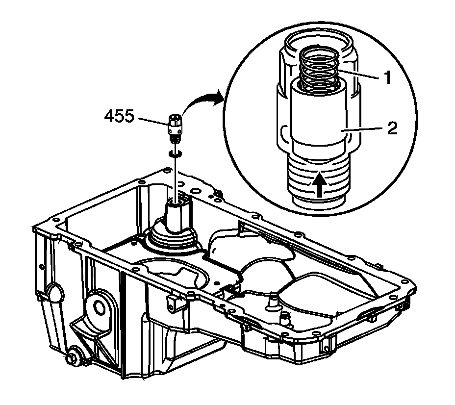

Engine Oil Control Valve: Service and Repair
Oil Pressure Relief Valve Replacement
Removal Procedure

1. Remove the oil pan.
2. Place the oil pan on a clean work surface.
3. Remove the oil pressure relief valve (455) and washer.
Installation Procedure
1. Inspect the NEW oil pressure relief valve for proper operation. Lightly depress the ball (2). The valve spring (1) should seat the ball to the proper closed position.
2. Install the NEW oil pressure relief valve (455) and washer.
3. Install the oil pan.